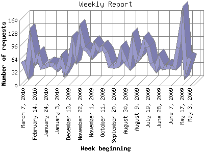

The Weekly Report identifies the activity for each week within the report
time frame. Remember that one page hit can result in several server requests
as the images for each page are loaded.
Note: Depending on the
report time frame for this report the first and last week may not represent
a full seven day week, resulting in lower hits.

| Week beginning | Number of requests | Number of page requests | |
|---|---|---|---|
| 1. | May 3, 2009 | 67 | 24 |
| 2. | May 10, 2009 | 39 | 24 |
| 3. | May 17, 2009 | 152 | 49 |
| 4. | May 24, 2009 | 92 | 31 |
| 5. | May 31, 2009 | 44 | 28 |
| 6. | June 7, 2009 | 45 | 28 |
| 7. | June 14, 2009 | 46 | 25 |
| 8. | June 21, 2009 | 44 | 26 |
| 9. | June 28, 2009 | 65 | 26 |
| 10. | July 5, 2009 | 41 | 26 |
| 11. | July 12, 2009 | 55 | 34 |
| 12. | July 19, 2009 | 95 | 37 |
| 13. | July 26, 2009 | 108 | 40 |
| 14. | August 2, 2009 | 73 | 34 |
| 15. | August 9, 2009 | 62 | 34 |
| 16. | August 16, 2009 | 104 | 42 |
| 17. | August 23, 2009 | 49 | 29 |
| 18. | August 30, 2009 | 59 | 35 |
| 19. | September 6, 2009 | 83 | 39 |
| 20. | September 13, 2009 | 50 | 31 |
| 21. | September 20, 2009 | 48 | 34 |
| 22. | September 27, 2009 | 49 | 29 |
| 23. | October 4, 2009 | 81 | 36 |
| 24. | October 11, 2009 | 93 | 34 |
| 25. | October 18, 2009 | 86 | 41 |
| 26. | October 25, 2009 | 100 | 45 |
| 27. | November 1, 2009 | 74 | 36 |
| 28. | November 8, 2009 | 86 | 37 |
| 29. | November 15, 2009 | 92 | 37 |
| 30. | November 22, 2009 | 128 | 50 |
| 31. | November 29, 2009 | 72 | 29 |
| 32. | December 6, 2009 | 101 | 41 |
| 33. | December 13, 2009 | 47 | 30 |
| 34. | December 20, 2009 | 33 | 22 |
| 35. | December 27, 2009 | 62 | 29 |
| 36. | January 3, 2010 | 41 | 27 |
| 37. | January 10, 2010 | 50 | 29 |
| 38. | January 17, 2010 | 52 | 32 |
| 39. | January 24, 2010 | 47 | 23 |
| 40. | January 31, 2010 | 45 | 25 |
| 41. | February 7, 2010 | 73 | 35 |
| 42. | February 14, 2010 | 59 | 30 |
| 43. | February 21, 2010 | 109 | 46 |
| 44. | February 28, 2010 | 35 | 22 |
| 45. | March 7, 2010 | 60 | 28 |
Most active week beginning November 22, 2009 : 50 pages sent. 152 requests handled.
Weekly average: 32 pages sent. 68 requests handled.
This report was generated on March 12, 2010 04:34.
Report time frame May 5, 2009 00:28 to March 11, 2010 22:45.
| Web statistics report produced by: analog 6.0 / Report Magic 2.21 |